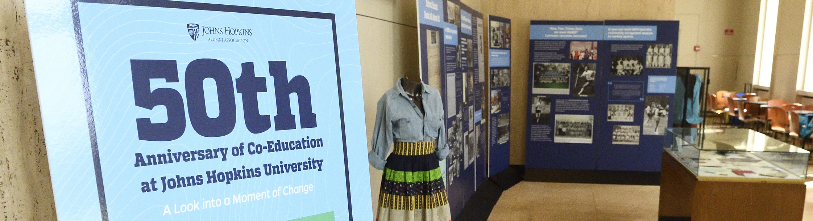
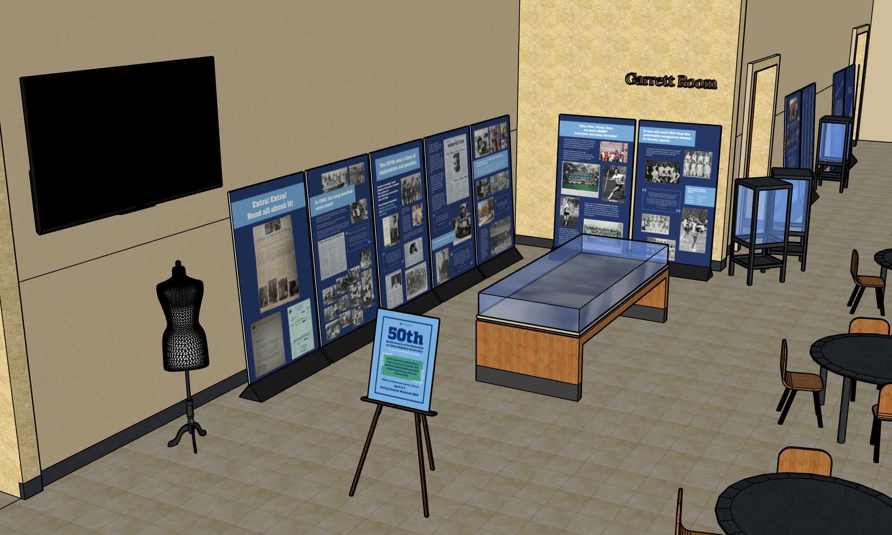
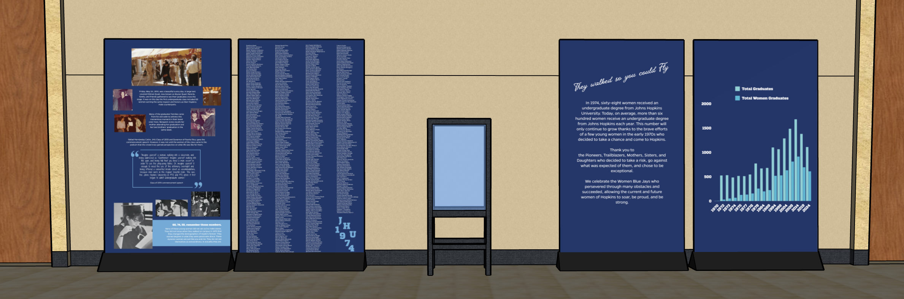
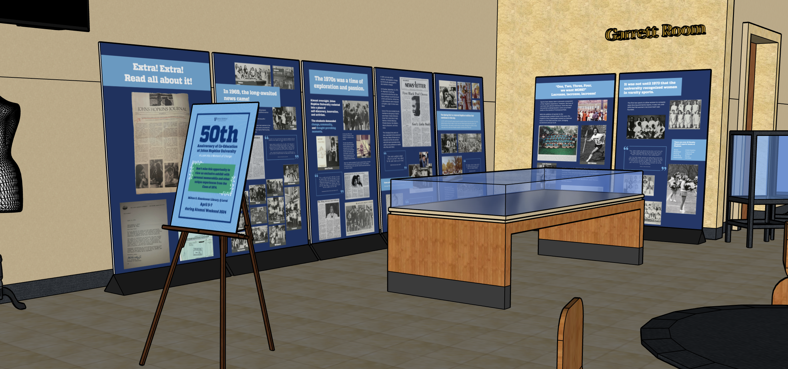
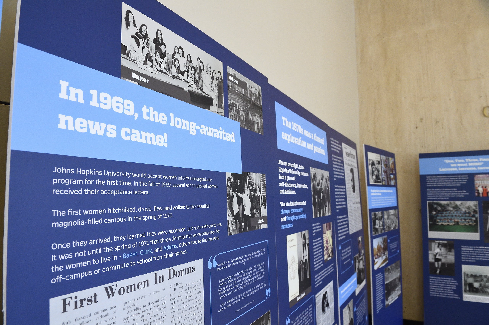
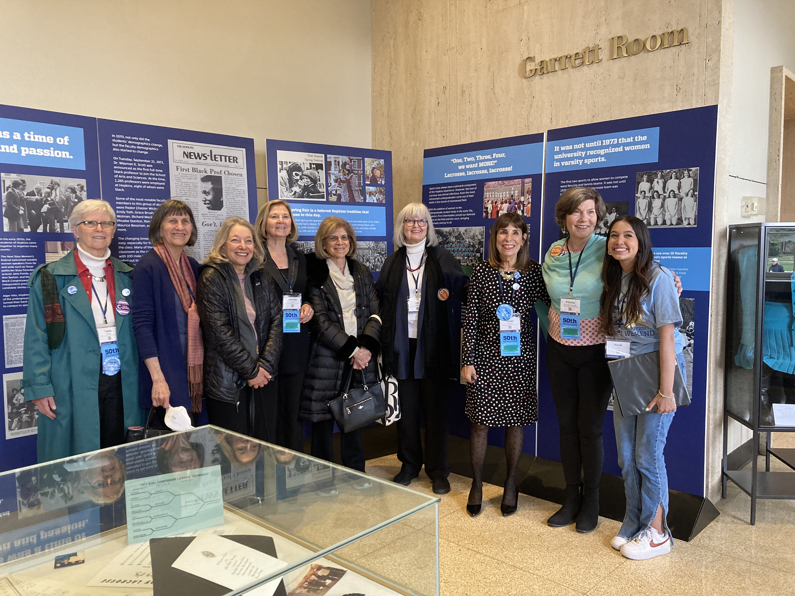

Celebrating 50 years of undergraduate co-education
Johns Hopkins University Reunion & Homecoming
Event Design • Graphic Design • 3D Exhibit Design

Timeline
March 2024 - April 2024Tools
Team
Solo Visual Designer
PROJECT OVERVIEW
Alumni Weekend 2024 at Johns Hopkins celebrated the 50th anniversary of co-education and a look
into the experiences of the first class of graduating women on campus.
Our team at the Office of Alumni Relations commemorated this monumentous event with an exclusive exhibit
for the Class of 1974 throughout the entirety of Alumni Weekend 2024.
GRAPHIC DESIGN
Including iconic events and incorporating the stories of alums, I compiled images and copy from yearbooks, papers, and
interviews into eleven large panels focused on different aspects of the undergraduate experience in 1970-1974,
from sports to dorm life to political activism in the Baltimore community.

INITIAL LAYOUT DESIGN
The exhibit's location was positioned in a corner of Q Level in JHU's Milton S. Eisenhower Library. I created a basic
replica of the level to envision the possible layout of the temporary setup.



FINAL EXHIBIT
With my designs completed in only a few weeks in time for Alumni Weekend, the team successfully
assembled the designs and the alumni memorabilia to share with alums, students, staff, and other
visitors to JHU's main library. Exclusive invitations were made and delivered to alumni from the Class of 1974.



FINAL THOUGHTS
It was very exciting to see alumni visit and come across this exhibit! It felt like an extremely unique
experience in that I had the opportunity to see my work come to life and directly watch the impact of my
designs over the weekend. This work also allowed me a deeper understanding of the college experience at
Johns Hopkins and in Baltimore back in the 1970s.
